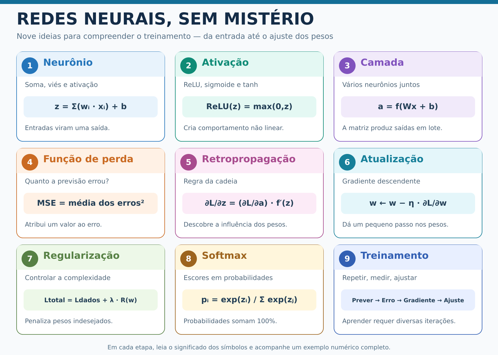

As nove fórmulas que fazem uma rede neural aprender
Não é preciso dominar cálculo para compreender a ideia. Uma rede neural recebe números, combina esses números, produz uma previsão, mede o erro e ajusta suas conexões. Cada fórmula abaixo descreve uma parte dessa história. Primeiro vem a intuição; depois, o significado dos símbolos; por fim, um exemplo que você pode conferir.


1 O neurônio: combinar informações
Para que serve? Mistura os valores de entrada, dando a cada um uma importância diferente. Pense em decidir se uma fruta está madura: cor e firmeza podem receber importâncias distintas.
a = f(z)
- xᵢ: valor de cada entrada (uma característica); wᵢ: seu peso ou importância aprendida.
- ∑: letra grega sigma maiúscula; significa somar os termos.
- b: viés, um ajuste adicional independente das entradas.
- z: soma antes da ativação; f: função que transforma a soma; a: saída ativada.
2 Ativação: criar respostas não lineares
Para que serve? Sem uma função de ativação não linear entre as camadas, várias camadas lineares continuariam equivalentes a uma transformação linear. A ativação permite aprender relações mais complicadas.
sigmoide(z) = 1 / (1 + e−z)
tanh(z) = (ez − e−z) / (ez + e−z)
- max: escolhe o maior valor; ReLU devolve zero para números negativos e mantém positivos.
- e: número de Euler, aproximadamente 2,71828; aparece em crescimento exponencial.
- sigmoide: transforma valores reais em números entre 0 e 1.
- tanh: transforma valores em números entre −1 e 1.
3 Uma camada: muitos neurônios ao mesmo tempo
Para que serve? Faz várias combinações em paralelo. Em vez de escrever uma soma por neurônio, agrupamos todos os pesos numa tabela de números chamada matriz.
- x: vetor de n entradas (lista de números).
- W: matriz de pesos com m linhas e n colunas; cada linha corresponde a uma saída.
- b: vetor de m vieses; a: vetor de m saídas.
- f: é aplicada elemento por elemento neste exemplo.
4 Função de perda: medir quanto errou
Para que serve? Converte a diferença entre a previsão e a resposta desejada num número a minimizar.
Entropia cruzada = − ∑ᵢ yᵢ ln(pᵢ)
- ŷ (y com acento circunflexo): valor previsto; y: valor correto.
- n: quantidade de exemplos ou valores avaliados; ²: eleva ao quadrado.
- pᵢ: probabilidade prevista para a classe i; ln: logaritmo natural (o inverso da operação exponencial).
- Na entropia cruzada, os yᵢ geralmente são rótulos 0 ou 1 (ou probabilidades-alvo) e as probabilidades previstas devem ser válidas.
Atenção: em classificação com várias classes, a entropia cruzada costuma ser calculada por exemplo e depois agregada (média ou soma). Os valores que alimentam a perda podem ser logits brutos quando a biblioteca combina softmax e logaritmo internamente.
5 Retropropagação: descobrir o efeito de cada peso
Para que serve? Descobre como uma pequena mudança em cada parâmetro afetaria a perda. É a aplicação repetida da regra da cadeia, percorrendo as operações do final para o começo.
- ∂: símbolo de derivada parcial; mede como um valor muda quando outro varia, mantendo os demais constantes.
- L: perda; z: soma do neurônio; a: ativação ou saída.
- f′(z): inclinação da função de ativação naquele ponto.
Essa é apenas a etapa de um neurônio. Para aprender o peso, também precisamos considerar que z depende de w: ∂L/∂w = (∂L/∂z) × x. Para o viés, ∂L/∂b = ∂L/∂z.
6 Atualização de parâmetros: aprender com o erro
Para que serve? Usa o gradiente para dar pequenos passos nos pesos e nos vieses em busca de menor perda. Esse procedimento básico é chamado de descida do gradiente.
bnovo = bantigo − η × ∂L/∂b
- η: letra grega eta; representa a taxa de aprendizado, isto é, o tamanho do passo.
- O sinal − indica que seguimos contra a direção de crescimento local da perda.
- Passos exagerados podem piorar o resultado. Métodos como Adam usam regras de atualização mais elaboradas.
Esse é um único exemplo didático; uma atualização real não garante queda da perda em qualquer conjunto de dados ou em todas as iterações.
7 Regularização: evitar aprender ruído demais
Para que serve? Desencoraja soluções desnecessariamente complexas, que funcionam muito bem nos exemplos de treino mas podem falhar com dados novos.
Ltotal = Ldados + λ × ‖w‖₁ (L1)
- λ: letra grega lambda; controla a força da penalidade.
- ‖w‖²₂: soma dos quadrados dos pesos (L2).
- ‖w‖₁: soma dos valores absolutos dos pesos (L1).
- Geralmente os vieses não entram nessas penalidades, por escolha de implementação.
Distinção importante: L2 e weight decay não são sinônimos em todos os otimizadores. Em SGD simples podem produzir atualizações equivalentes sob parametrização apropriada; AdamW aplica decaimento desacoplado. Dropout e parada antecipada são outras estratégias de regularização.
8 Softmax: transformar escores em probabilidades
Para que serve? Diante de várias categorias mutuamente exclusivas, transforma escores brutos (*logits*) em valores positivos que somam 1.
- zᵢ: escore bruto da classe i; ele não é uma probabilidade.
- ezᵢ: exponencial desse escore; ∑ⱼ: soma das exponenciais de todas as classes.
- Índice i indica a classe escolhida; j percorre as classes para calcular o total.
Na prática: para evitar estouro numérico, calcula-se softmax após subtrair o maior logit de todos os escores; isso não altera as probabilidades. Em classificação multilabel, geralmente usam-se sigmoides independentes em vez de softmax.
9 O treinamento completo: repetir e avaliar
Para que serve? Integra as etapas anteriores num processo de aprendizado. O objetivo não é apenas decorar os exemplos, mas melhorar com dados que o modelo ainda não viu.
e previsão
perda
gradientes
pesos
Depois da atualização, novas entradas passam novamente pela rede e o ciclo se repete. Ao longo do processo, usamos dados distintos para treinar, selecionar ajustes (validação) e estimar o desempenho final (teste).
| Etapa | Pergunta que responde |
|---|---|
| Propagação direta | Qual previsão a rede produziu? |
| Perda | Quanto ela errou segundo a métrica escolhida? |
| Retropropagação | Quais parâmetros influenciaram o erro? |
| Otimizador | Quanto vamos mudar cada parâmetro? |
| Validação | O aprendizado parece funcionar fora dos exemplos de treino? |
Confira as contas no Python
O arquivo de exemplo usa apenas a biblioteca padrão. Ele verifica os números apresentados nesta página e executa um passo de atualização de um neurônio.
python conferir_formulas.py
Saída esperada:
PASS — 9 conceitos ilustrados; contas verificadas. Exemplo de gradiente: w 0.5 -> 0.3, b 0.0 -> -0.1 Perda (meio erro quadrático): 0.500 -> 0.125 Softmax para [2,1,0]: [0.665, 0.245, 0.09] MSE de [1.5,1] frente a [1,2]: 0.625
O código confere resultados matemáticos selecionados. Não é uma implementação de treinamento de uma LLM.
Para continuar aprendendo
Consulte Fundamentos de Machine Learning e o guia de 120 conceitos de LLMs.
Documentação de apoio: PyTorch — CrossEntropyLoss, PyTorch — AdamW e PyTorch — diferenciação automática.